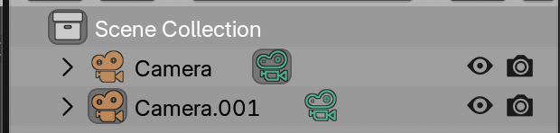

Creating output
Creating output from a scene in Blender is done by adding a camera and pressing Render > Render Image or Render > Render Animation for the full animation. This writes images or movies to your output folder.
Adding and moving the camera
Adding a camera can be done from the 3D viewport by pressing Add or Shift + A, and finding the camera in the submenu.
The camera can be moved as any object but has a few extra features.
Active Camera
The active camera is the camera in the scene that will be used in rendering, and can be switched and selected through the green camera icon in the outliner.

Viewing through the active camera
The view through the current active camera can be seen by clicking the camera icon on the right of the 3D viewport.
Aligning view
The easiest way to set the camera direction is by aligning it to the view. This means:
- Setting a nice view angle and position
- Aligning the camera with
View > Align View > Align Active Camera To View
Camera properties
Camera properties can be found under the camera icon in the properties. This is where the camera can be switched between perspective and orthographic modes, or the focal length set for a perspective camera.
Perspective and orthographic cameras
Perspective cameras are the default of Blender, and often the type of camera we are most used to in daily life. These cameras have a virtual lens, providing a perspective transform, making distant objects appear smaller than near objects.
In contrast to this, orthographic cameras show all objects as the same size, no matter the distance to the camera. This thus can be better for comparing scales of objects in data, although it is less intuitive to viewers.
Setting up lighting
Lighting can be very important for getting a good feeling of depth for the data, but it is not always necessary or essential.
In emissive renders, it is often not necessary to set up light.
In non-emissive renders, the Microscopy Nodes default is to use the world color and brightness to light the scene. However, setting up specific lighting add depth to renders.
You can set up lights by adding them from the Add menu, as objects, moving them and changing their Power and Color in the properties.
Basic animation
Animation can be very intricate, but the basics and getting started can be straightforward. The way this works is by setting keyframes. These are a set value at a set timepoint, if this value is different at another keyframe, Blender will interpolate between the two points.
The nice part of Blender is that almost any value can be keyframed. You can set a keyframe by hovering over a value and pressing I.
So a simple camera animation setup takes:
- Set the camera
- Set the timeline at timepoint 0
- Hover over the camera
LocationandRotationin the properties and pressI, setting a keyframe. - Set the timeline at timepoint 100
- Set the camera to a new position
- Again hover over the camera
LocationandRotationin the properties and pressI, setting a keyframe.
Then in between the two keyframes, Blender will interpolate the camera positioning.
Rendering
Rendering can be done with Render > Render Image or Render > Render Animation. It can be useful to still check out the render settings